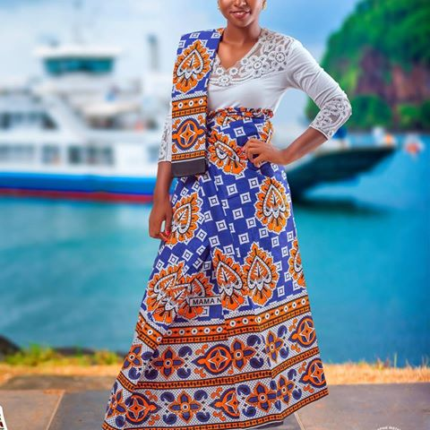

Mayotte
Située dans l'hémisphère Sud, entre l'équateur et le tropique du capricorne, à l'entrée du canal du Mozambique, entre Madagascare et l'afrique, Mayotte est un petit archipel volcanique de 374 Km2. Il forme la partie orientale de l'archipel des comores. Elle comprend deux îles principales (Grand-Terre et Petit-Terre) est une trentaine d'îlots dispersé dans la lagon étendue sur plus de 1500 Km2.L'île principale Grand-Terre, est Formée de 6 Massifs dont le point le plus haut est le Mont Bénara(660M).
Aux origines du peuplement de Mayotte, plusieurs civilisation sont à l'origine du peuplement de Mayotte.- Premier peuplement d'origine bantoue au Vème et le VIIIème siècle.
- Madagascar et L'Afrique au XIIIème siècle et les Arabes apportent la culture Swahilie et la religion Musulmane.
- Les Premier Europeéns, Portugais et Français débarque à Mayotte vers le XVème sicle et utilisent l'archipel comme point de ravitaillement sur la route des Indes.
- À la fin du XVIIIème siècle jusquau début du XIXème siècle, Mayotte est le théatre de troubles violents(Razzias d'esclaves par les Malgaches, pillages, guerres de succession...). La population est Réduite à 270 372 habitant en 2019


Nos Langues
En plus du Français, deux langues sont parleés à mayotte:
- Le Shimaoré
- Le Kibushi
Le Shimaoré,d'origine Swahilie, est parleé par la majorité de la population. Le Kibushi est quand à lui d'origine malgache, nitamment du nord-ouest de Madagascar.

Déba (Chant)
Le déba est une fête réseveé aux femmes, elles entrent en chants Mahorais mélangés avec des versés ddu coran et accompagné de rythme de Tari. Le jeu consiste à offrire la meilleur chorégraphie au public entourant le plateau de la cérémoni. Les chorégraphie consiste à ne bouger que les mains et le haut du corps. Une destuelle très travaillée des bras orné de bijoux, des mains ausx hénnés et de la tête portant le "M'sindzano", masque de beauté. Les "debayeuses" sont habillées traditionnellement avec leur salouva et quelque fois une petite écharpe sur l'épaule.
Cette cérémonie est célébrée pour tout type d'occasion. Le plus souvent on célèbre le déba pour s'amuser ou lors des retour des pèlerins de la Mecque, la circoncision et à chaque fois que l'occasion s'y prête. Il faut noter que cette manifestation n'a rien de religieux contrairement à ce que l'on peut entendre dire par-ci par-là. Ce n'est pas paroles Arabes que cela est religieux.
Le Daf, est originaire du Moyen-orient arabo-persan, accompagne souvent le tari. Comme lui, c'est un tambour sur cadre à une seule menbrane, mais il est pourvu de cymballettes qui s'entre choquent quant le secoue exactement comme le tambourin moderne occidental dont il est d'ailleurs le prototype.
C'est sur tout sont aspect idiophone qui est rechercher à Mayotte. Sa membrane joue un rôle secondaire qui est déjà tenu par le tari.
le sont même souvent des tambourins sens membrane qui sont utilisés sous le nom de daf, ce qui possède une tradition de fabrication locale, le daf, apparement, n'est pas fabriqué à Mayotte.

Le tari, lui aussi à l'origine arabeo-persan c'est un tambour sur cadre à une seul membrane qui peut être joué par les hommes ou par les femmes.


Tenue Traditionnelle
La tenue traditionnelle des Mahorais est le salouva pour la femme, composé de trois pièces: le salouva en lui même, une grande bande de tissus cousue et nouée au niveau de la poitrine, un t-shirt souvant près du corps appelé "body"et un kishali, châle couvrant la chevelure ou posé sur l'épaule.

Les Hommes s'habillent désormais à l'occidentale, saut pour aller à la mosqué: il revêtement alors le Kosia(chapeau) et le kanzzu(grand robe).

Beauté de la femme Mahoraise
La beauté de la femme Mahoraise ce résume à un morceau de bois de santal et une pierre de corail, en ajoutant de l'eau et en frottant le bois sur la pierre nous obtenant une pâte blanche onctueuse que nous appliquant sur le visage, soit sous forme de masque soit en déssinant des motifs ornementaux qui se répètent.


.jpg)